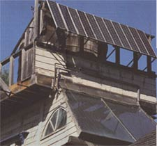
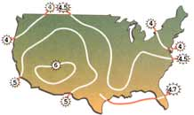
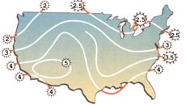
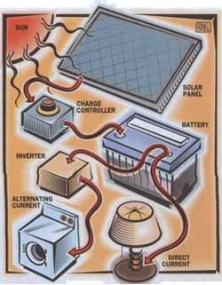
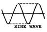
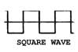
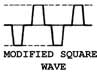
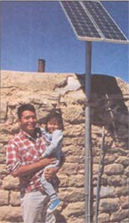

ENERGY &ENVIRONMENT
Living Off the Grid:
You probably think that solar energy is a resource that makes sense only for an isolated town in Arizona or New Mexico, or is the province of eco-hippies. We're happy to report that neither is true. It's a bona fide, cost-efficient source of energy that not only has the virtue of being a genuine blessing for the environment, but also allows new home builders the option of declaring permanent independence from their local utility.
In the first part of a continuing series on renewable energy, MOTHER examines the recent technological advances and price reductions that have made solar power so practical, plus some guidelines for determining if your home is a good candidate for a solar-generated electricity system.
Solar-generated electrical power for the individual homeowner has been an elusive dream since the first burst of national solar enthusiasm in the 1970s. For a brief period it represented one of our best hopes for avoiding the general, oil-starved panic that began when the OPEC nations announced their embargo in 1973. Fueled by considerable government investment with the passage of Carter's first budget in 1977, renewable energy technology was propelled into the national consciousness. Several megawatt-size power plants soon sprang up in the sunlight-rich South and South west, where they continue to operate and provide competitively priced power.
Individual homeowners did not fare as well, however. They were frustrated to find that generating electricity from the sun was neither cheap nor easy, especially in the North and Northwest where the average number of sunlight hours is 30 - 60% less than that in the South. Stand-alone solar-electricity-generating equipment was still in its technological infancy, not terrifically efficient, and simply not able to compete with the cost of hooking up to the grid of the local utility. Building a remote home meant a very large investment in extending a utility's electrical grid or an equal, if not greater, investment in a self-sufficient, home-generated power system.
The 1980s brought steady progress to the industry, however, and equipment became more efficient and less expensive despite substantially reduced government investment in research and development. Home systems have become so competitively priced, in fact, that it is now less expensive to design an independent generating station than it is to extend the utility service grid one-half mile!
Declaring independence from the utility grid using solar power was once an irresistible, if impractical dream. Now home systems are not only a viable alternative, but in many instances an economic necessity.
The map on the left shows the hours of sun per day as a yearly average; the map on the right shows the hours of sun per day from December 2 to January 4. Independent solar systems should be designed keeping in mind inhospitable weather conditions.
Solar power plants use huge mirrors (called focused collectors) to concentrate the sun's heat on a pipe or collector. Water or some other liquid flows through this pipe, heats up, and is used to make steam. The steam then drives a turbine that generates electricity. Those living in areas serviced by collector plants will enjoy a relatively stable and inexpensive source of energy for decades.
For the rest of us, photovoltaic or PV cells are the most practical way of generating power. The PV effect isn't new, however. In 1839, a French scientist named Edmund Becquerel found that light falling on certain materials produced electricity. But it wasn't until 1954 that the first "modern" PV cell was built.
PV cells must be made of a semiconductor material, and silicon is by far the most often used. When light strikes the cell, electrons are knocked loose from the silicon atoms and flow into a built-in circuit, producing electricity. Simple. A cell about four inches in diameter will produce just over one watt of direct current (DC) power per hour of direct sunlight. Cells can then be joined together in groups and covered with tempered glass or some other transparent material to form modules. Modules, in turn, can be joined to form arrays. Individual modules typically generate about 50 watts per hour (usually referred to as watt-hours); arrays can be arranged to generate an unlimited amount of power.
In many small PV systems, the appliance is simply wired directly to the module, but for larger applications such as home use, a power regulator, battery, and wiring system are necessary so that energy can be stored for cloudy days and evenings.
The DC power generated by a solar module can pose a problem, however. The vast majority of home appliances use AC (alternating current) power, making a DC-to-AC power inverter installed between the batteries, a very necessary part of the system.
But an inverter has to do more than just change DC to AC; it must also modify the electricity to meet the standards of utility power, for which most home appliances are designed. AC electricity from utilities in the United States changes polarity 120 times per second at 60 cycles (or hertz) and is delivered in a "sine" wave form. This means that when a power-hungry appliance, such as a dishwasher, is turned on, the power surge from the utility line is delivered smoothly and gradually, reducing the chance of damage to appliances by a sudden burst of power.
When inverters were first introduced in the first few decades of this century, they were actually electric motors with moving parts driving an AC alternator. They produced a smooth sine wave but could only generate a modest amount of power at any given moment, usually no more than one kilowatt (kW). A washing machine or garbage disposal, for instance, can easily draw 2kW. Not only were the inverters not up to the task of providing enough AC power for even a small home, they were hopelessly inefficient, demanding twice as much DC power as was delivered in AC.
The decades that followed brought solid-state inverters, which were a bit more reliable and powerful, though still plagued by poor efficiency. Their wave form, square in pattern, was often accompanied by sudden surges of power. These surges were harmless to more hardy appliances but could have potentially disastrous consequences to delicate equipment such as stereos and computers.
In 1985, Trace Engineering introduced its first high-efficiency, modified square-wave inverter, which revolutionized the home-power industry. Losing no more than 10% of incoming DC power during inversion, it made the entire family of AC appliances again available to the independently powered home. Additionally, its modified square wave suppressed most of the undesirable effects of the pure square wave. Finally, it could produce 2kW of peak AC current at a similar cost to the lower powered models, making it a more practical, inexpensive device for homeowners.
The next technological leap will take place this January, when Trace introduces the SW4024. It is a solid-state, computer-controlled, pure sine -wave inverter retailing for less than $3,000 with an efficiency rating of greater than 90%. It houses in one unit the inverter, battery charger, and charge controller for the separate battery array, plus a stop/start control for the gas generator, which senses when batteries are depleted and starts the backup generator automatically. This means greater flexibility, ease of operation, and reduced cost since the unit houses several appliances that otherwise have to be purchased separately.
Planning Domestic Power:
Felicia and Charlie Cowden's Story
Charlie and Felicia Cowden live "off the grid" in a house they built on the North Shore of the Hawaian island Kauai. In the aftermath of Hurricane Iniki, which bludgeoned Kauai and many other parts of Hawaii in September 1992, they used their newfound solar-energy expertise to help their neighbors get their power back. As you will see in their story, their own move from the grid required adaptation, but the conclusions they have drawn will work for anyone who uses electricity.
Felicia: The biggest stumbling block on the way to power independence is our culture's custom of wasting incredible amounts of energy. We waste more than we use. You simply can't buy energy independence: you have to make a brain investment, and learn some things. We started moving toward conservation when we were living on the grid by replacing incandescent lights with compact fluores cents.
Charlie: When we were deciding whether to buy our property and build, whether to pay the money to trench and connect to the power lines at the highway or go solar, I didn't know anything about alternative energy sources. So I asked my contractor, should I do it? He didn't know much about it either, but he said, "It's the future. You gotta do it:'
Felicia: So we throttled back our energy use when we moved to our new house. We were limited financially and could get only six panels (nodules). We had figured we would need more, but during the sunshine months our batteries are full by noon-and we haven't given anything up. When I visit other people, I see incandescent lights and can't help but notice all the things being done inefficiently. It feels sinful! Solar power's biggest gift to the environment is showing people that it's possible to live well without being wasteful. Since moving in, I've become an energy evangelist, always trying to get more people into conservation.
There are so many things we wish we'd known. Nobody told us about phantom loads - things that use electricity whenever they're plugged in, like the clock on a microwave. Four little clock radios can use up everything our panels produce in a day. We use battery-operated clocks with rechargeable batteries. The real energy criminals of the small-appliance world are the remote products that require chargers, like electric toothbrushes and cordless razors. They draw substantial current to charge their batteries, and then when the batteries are full, they continue to trickle energy. That's a lot of burnt, dead dinosaurs for a few minutes of minor convenience - and we all have to breathe the smoke. Much better to use appliances that plug in directly and burn power only when in use. If push comes to shove, you can always brush your teeth yourself.
We've learned a lot since we built our house, most of it what the power company calls load management or demand side management. I can't run the stereo when I'm doing a wash, because I chose a power-hog, double agitator washing machine. Now, I'd buy smarter and get a front loader.
Charlie: I saw a front-loading washer in the store, and I thought they'd made a mistake because the tag said it used one-tenth the power of the top loaders.
Felicia: It's all in the torque. You've got to understand the difference between inductive loads, like motors and little transformers, and resistive loads, like lights. Inductive loads are power hungry, especially when they start. For example, you can't run the vacuum cleaner when the washer's running. The garbage disposal puts a big strain on our system -
Charlie: - and the television picture gets real small.
Felicia: If I wake up in the morning and see the batteries aren't depleted, I look for high-demand things to do, like washing and vacuuming. Load management depends on weather. If it's cloudy and the batteries are depleted, I think about conservation.
Charlie: At first, demand-side management is hard for people to think about. They still want to act as if they had infinite power, and they have equipment -
Felicia: - like their old refrigerator, which would take 24 modules by itself.
And when you're buying a gas stove, it's going to be a real problem if you have to plug it in.
Charlie: Those glow plugs on electric gas ranges burn an awful lot of energy. We tell people that they just can't take that kind of equipment along.
Felicia: I tell people what the average household uses, and that it would require a $300,000 solar installation, so you need to start managing. People think they've got to make sacrifices, give up TV, live in the dark. That's not necessary. They just have to pay attention.
When we talk about energy self-sufficiency, we try to get people looking away from money issues. Maybe you save money going off the grid, but there are more important things. When you go to sleep at night, there's a zero electromagnetic field. And think of the stuff you aren't putting into the atmosphere. And it's a bonus if you save money.
From: The Independent Home (Chelsea Green Publishing; 1993) by Michael Potts, Copyright © 1993 by Michael Potts.
So the technology is ready and waiting, but is it practical? The answer depends entirely upon the site of a new home. After contacting local utility companies in western New York State, Tennessee, and Idaho, MOTHER calculated that an unofficial average cost for grid extension is $6 per foot if the line is placed above ground, and nearly $10 per foot if the cables need to be buried.
All companies we contacted provide a certain amount of extension at no charge, usually 300 - 500 feet. If the extension runs 800 feet, utilities will charge only for the last few hundred feet. Run new cable above ground to a home a quarter mile away from the grid in Cairo, New York, for instance, and Niagara Mohawk, the utility that covers most of upper and western New York State, will ask for $5,520, or $9,200 if the line must be buried. Design a remote home just a few miles down a rural highway and the cost jumps into the six-figure range. And then, of course, you have a monthly utility bill to look forward to.
Until recently, solar power offered little economic reason to change course. When the first stand-alone units were introduced in 1978, the systems cost $100 per watt-hour of energy produced. Even at $50 per watt-hour, a system that generated an average amount of home power ran up a $500,000 tab or more. Prices plummeted through the '80s however, and remote home kits currently sell for $4 - 6 per watt-hour. Many manufacturers are expecting prices to level off at $3 per watt-hour by 1996.
A fully outfitted PV system that supplies 4000 - 5000 watt-hours per day in northern climates costs approximately $16,000. But one of the great benefits of a solay system is flexibility. Modules are designed to be joined together, and you can easily start with a smaller investment and just a few modules and build the system gradually. Once the grid extension of a half mile or more is reached, the solar alternative will have already paid for itself the minute you turn it on! Your home will continue to have power even when your neighbors on the grid experience a blackout and your electricity costs will remain stable throughout the life of the system.
How much power will your home need? A reliable figure can be obtained by counting the appliances in your home and tallying the total wattage over the course of an average day. If the television is on for four hours and consumes 65 watts, write 260 watt-hours in the daily column. After a few calculations, the importance of higher efficiency appliances such as compact fluorescent lighting becomes clear.
It isn't uncommon for an average household using grid power to consume 10,000 watt-hours of electricity per day, so how can home owners adapt to half as much? The answer can come only from looking at your electrical needs in an entirely new way. A power-system design or redesign must start from the ground up, and an initial investment in time and planning can reap permanent benefits.
If the daily electrical load for your home is 3000 watt-hours, your solar system must generate that power plus anywhere from 30% - 40% more. Any electrical system loses some its power through wires and connections, and solar systems lose even more. Battery banks generally waste 15 - 25% of their power while discharging, wires and regulators lose 2% each; and inverters will lose 5 - 10%.
It's important to understand, though, that there are some things average-size PV systems were never meant to do. Electric-water and electric-baseboard heaters, for instance, consume power in such volume that they cannot be properly supplied without a massive PV array. All heat and cold-air generators are notorious energy consumers and they - along with similar appliances such as cook stoves, clothes dryers, and air conditioners, use 85% of household energy.
There are, however, refrigerators and freezers designed for solar homes that consume 20% of a conventional model's energy. They are more expensive but save several times their cost in electrical savings over the course of their lifetime. A better water-heating alternative is gas, either natural or propane. If you chose a PV system for your home because you wanted independence from the utility grid, why pay the gas utility to extend their service?
This leaves propane. Housed in a tank on the outside of your home and fed through standard gas plumbing, propane is no more difficult to install and maintain than natural gas. Propane stoves, water heaters, and refrigerators are all available for the home and cost approximately one-third as much to operate as a comparable electric appliance. Because it is heavier than air, propane will tend to collect in areas such as basements in the event of a leak. If your home is designed with a basement, a ventilator fan linked to the outside is an important precaution.
Your home can also take advantage of passive solar-heating measures by including a number of south-facing, insulated windows to catch the sun's radiation. The heat of the day is stored in the walls and floors, and radiates throughout the house to supplement other systems. Wood stoves are also a far more efficient source of heat than electrical appliances and a very practical alternative in a solar home.
To most Americans, the simple act of flicking on the light is as taken for granted as breathing air - without so
much as a thought about its possible environmental consequences. But to Sylvia Brownskill and hundreds on the New Mexico Navajo Indian reservation, accessing electricity without harming the environment is of the utmost importance - and until recently, virtually impossible.
Four years ago, however, practical technology for producing "clean" energy became available, and now even those in the most remote locations of the reservation can flick on a light switch, knowing that the electricity generated is produced in its entirety by the power of the sun.
Sylvia and approximately 200,000 other Native Americans are members of the Navajo Nation. They live near or on 25,000 square miles of land allotted to them by the United States in treaties written years ago. The reservation spans parts of New Mexico, Arizona, and Utah and it was there that I visited three years ago.
In 1989, Tom Volek, a solar installation specialist from Albuquerque, New Mexico, approached the elders of the Navajo tribe and introduced the idea of installing photovoltaics in their community. He explained the procedure and its benefits and answered all of their questions. Excited about the idea, the elders asked Volek, who was Working for a local solar-electricity distributor called Photocomm, to install power systems in over 650 of their homes. While Volek set up the systems, each of which consists of two 3.5-amp panels, two deep-cycle batteries, battery boxes, and power control units, he took the time to show many of the young Navajo men how to do the installations themselves. Says Pauline Peshlakai, a Navajo Community Health Representative for the Indian Health Services, "What the Navajo youth need more than anything else are career opportunities. Solar installations, which Tom Volek has trained many young men to do, is one excellent way of training our youth for their future." She hopes these young men will eventually be able to use these new skills outside of the community for extra income.
Navajos now have access to fluorescent lighting, fans, 12-volt radios, and TV, sewing machines and power tools. For the most part PV can run any electric items that are able to operate from a low-voltage power source. Many of these solar installations were set up on roofs covered with sheep dung, which hardens like adobe, The incongruity of high-tech solar panels on structures made of such primitive building materials is interesting, to say the least, but confirms once again how suitable solar electricity is for almost any installation.
The price for all 650 installations was $1,250 apiece. Because the Navajos did not want to ask the government for financial assistance, they paid for the installations with money they earned from leasing mineral rights to coal and oil companies. It's ironic that the dollars Navajos used to buy renewable solar systems were the same dollars they had earned selling nonrenewables.
What does this new solar power mean for the Navajos? Most important, it means they can continue to live close to nature without being tethered to modern trappings. To many Navajos, the "white man's" obsession with making their social lives, food, and all other necessities fit into an image of processed perfection causes the loss of connection with nature - a price that, for the Navajos, is too high to pay.
The Navajos can now breathe cleaner air as well. Before photovoltaics, tribe members were forced to rely on gas lanterns for light. Families awakened at 5 A.M. each morning to light a fire in their lanterns - at one time using a dish of fat, then an oil lamp, and eventually a pressurized gas lantern. Not only did all of these lanterns foul the air - giving off dangerous and irritating exhaust fumes - but they were also all but ineffective, offering only a dim, flickering light source. Today, Navajo families have safe, clean power provided by the same sun that they have worshipped as a deity for millennia.
A Navajo mother expressed her satisfaction with this new power source: "My sons no longer have red eyes and chest pains from breathing in lantern fumes. They see better and can do their homework without these health hazards; they have the clean light provided by our sun and the sand from beneath our feet."
Photovoltaics also allow Navajos to continue living their seminomadic life-style. Each year, the Navajos move during the summer to the cooler hills and greener grasses of the highlands, and then move back to their hogans in the plains during the winter. The portability of the power equipment gives the PV owner such flexibility in moving the lightweight system that it can be used anywhere. The 3.5-amp solar panel is approximately 3' x 4', and weighs less than 10 pounds. It can either be bolted or laid flat on any pitched surface with Velcro, wire, or any secure but temporary fastener. Navajos use the two-panel system, which creates 7 amps per hour from direct sunlight. Together with a deep-cycle battery that stores electric power, the entire package weighs in at 50 pounds and can be moved with little effort to any location.
Last, the Navajos can maintain simplicity in their lives, one of their highest priorities. During my trip I had the chance to see the importance of this firsthand. It was a joy to watch the nimble fingers on a weaver's loom creating a prized rug made from just a few pounds of wool. Master carvers created magnificent products formed from pennies of wood; others crafted priceless pottery from free clay. I marveled at their skills and began to realize that the essence of these people's heritage is the combination of simplicity and beauty, provided by Mother Nature's bounties - the good earth.
-Robert Terry Epstein
Most of the equipment in a solar system is most conveniently purchased through special distributors, and there are dozens nationwide. (Some nonprofit information centers that can recommend distributors are listed below.) This can be both a benefit and a drawback, however.
Dealers know they are a source of convenience, and price accordingly. All will provide an itemized list of equipment needed for your system. Examine it carefully before buying, and make sure that your hardware store doesn't sell the wiring, batteries, etc., for less. Home system kits are often measured in watt-hours produced per day, but the dealers often will not tell you how many hours of sunlight are required to generate that power. For instance, a kit that contains twelve 50-watt modules, generates 600 watt-hours (12 x 50). The kit may be rated at 4000 watt-hours per day and may fit into a budget, but those 12 modules have to be exposed to direct sunlight for 6.6 hours in order to provide 4,000 watt-hours, and there are only a few areas in the country that can provide that amount of sunlight predictably. A system must be measured using the average sunlight figures from the worst time of year, weatherwise, and that figure can often be as little as three hours per day in the Northeast and Northwest. Suddenly you realize that the system that sounded so good in the brochure generates only 2,500 watt-hours for your home in Vermont.
Although the process may seem daunting initially, you should consider installing the system yourself. Time invested in learning the basics will reap very tangible economic rewards. In our next issue, MOTHER will detail the installation process in an independent home, providing a step-by-step guide for the solar enthusiast.
For More Information:
Solar Energy Industries Association
777 N. Capitol Street, NE, Suite 805
Washington, DC 20002-4226
202/408-0660
American Solar Energy Society, Inc.
2400 Central Avenue, Suite G-1
Boulder, CO 80301
303/443-3130
National Center of Appropriate Technology Assistance Service
P.O. Box 2525
Butte, MT 59702-2525
800/428-2525
Solar Energy International
P.O. Box 715
Carbondale, CO 81623
303/963-8855
|
 Courtesy REAL GOODS TRADING CORP. SUNLIGHT DATA COURTESY OF SUNELCO INC ILLUSTRATIONS BY SCOTT MACNEILL |
 DC electricity generated by solar panels is most practically stored in deep-cycle batteries for home use. A charge controller regulates power to the batteries and protects them against overload. Appliances that require AC Power must be fed through a DC/AC inverter. |
 The smooth line of the sine-wave inverter means that power is delivered smoothly to peak capacity. Square wave deliver their peak power much more quickly; modified square waves slightly less so. |
|
 |
 |
 |
|
 |
|
|
|
 |
|
|